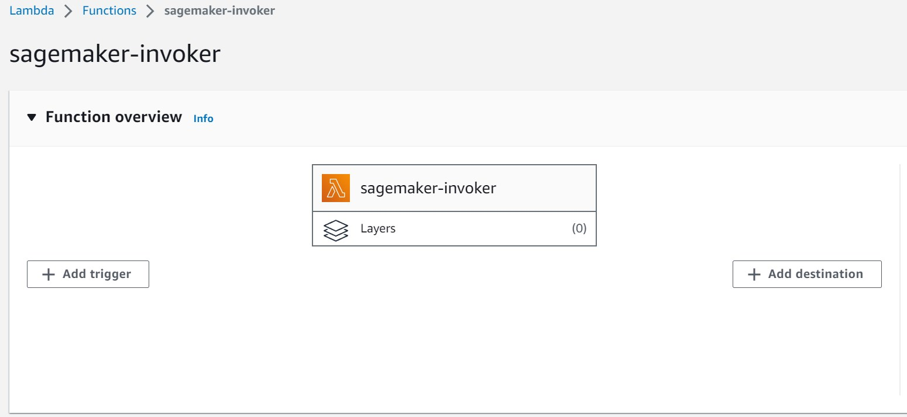

Backend Implementation#
For backend connections between the web application and Sign Search functionalities, a linkage between AWS Sagemaker and the website needs to be established. AWS Lambda plays a pivotal role in this process by invoking Sagemaker to send keypoints and subsequently receiving prediction results. This interaction is orchestrated to ensure seamless communication between the various services.
AWS Lambda Implementation#
Note: The following description covers two scenarios: one involving video transmission and another focusing on keypoints, as video transmission was previously employed.
AWS Lambda Name: sagemaker-invoker

import os
import io
import boto3
import json
import csv
# grab environment variables
ENDPOINT_NAME = os.environ['ENDPOINT_NAME']
KEYPOINT_ENDPOINT_NAME = os.environ['KEYPOINT_ENDPOINT_NAME']
runtime= boto3.client('runtime.sagemaker')
def lambda_handler(event, context):
#print("Received event: " + json.dumps(event, indent=2))
# Obtén el nombre del archivo recién colocado en el bucket
if 'video' in event:
file_key = event['video']
print(file_key)
print("Before runtine.invoke_endpoint")
response = runtime.invoke_endpoint(EndpointName=ENDPOINT_NAME,
ContentType='application/json',
#ContentType='application/x-s3-object-key',
Accept='application/json',
Body=json.dumps({'uniqueName': file_key}).encode())
result = json.loads(response['Body'].read().decode())
elif 'keypoints' in event:
file_key = event['keypoints']
response = runtime.invoke_endpoint(EndpointName=KEYPOINT_ENDPOINT_NAME,
ContentType='application/json',
Accept='application/json',
Body=json.dumps({'keypoints_list': file_key}).encode())
result = json.loads(response['Body'].read().decode())
elif 'default' in event:
result = {'instances': [{'gloss': 'AYUDAR'}, {'gloss': 'PENSAR'}, {'gloss': 'GUARDAR'}, {'gloss': 'DINERO'}, {'gloss': 'CAMINAR-PERSONA'}]}
else:
error_message = {"no ha mandado el formato correcto"}
return {
"statusCode": 500,
"body": json.dumps(error_message)
}
print("After invoke_endpoint")
print("RESULT",result)
pred = result['instances']
print(pred)
return pred
lambda_function.py#
Upon invocation, the function expects an event and context object as parameters. It first retrieves environment variables ENDPOINT_NAME and KEYPOINT_ENDPOINT_NAME using the os.environ dictionary, which are expected to hold the names of the SageMaker endpoints to be invoked.
The Lambda function’s core functionality is driven by the lambda_handler function. It examines the incoming event object to determine whether it contains information related to a video or keypoints. If the event contains a ‘video’ key, the function assumes that it is dealing with a video file and proceeds to invoke the specified SageMaker endpoint (ENDPOINT_NAME). It constructs an input payload containing the uniqueName of the video file and sends it to the SageMaker endpoint. The response is then decoded and parsed as JSON to retrieve the prediction result.
Similarly, if the event contains a ‘keypoints’ key, the function assumes it’s dealing with keypoints data. It invokes the corresponding SageMaker endpoint (KEYPOINT_ENDPOINT_NAME) using the keypoints data as input. The process is identical to the video scenario.
If the event doesn’t match either of these scenarios, the function returns an error message indicating an incorrect format.
React Implementation#
Within the React Implementation, navigate to the dedicated sign-search directory. Here, the focus is on SignSearch.jsx, responsible for constructing the SignSearch page on the website. This component interfaces with the sign-search.services.js file, which hosts the useSignSearchService module.
Integration with useSignSearchService#
The purpose of the useSignSearchService module is twofold: it facilitates the uploading of landmarks data and the retrieval of LSP (Lengua de Señas Peruana) gloss-related search results. This module operates within the broader system, leveraging AWS services and utility functions to achieve its functionality.
The core function, uploadLandmarks, encapsulates the entire workflow. It accepts an array of landmarks data, representing various types of body landmarks extracted from images or videos. Within the function, an instance of the AWS Lambda service is instantiated using the AWS.Lambda() constructor. The provided landmarks data is meticulously formatted into a suitable JSON structure and then bundled within the Payload parameter of the AWS Lambda invocation.
Upon invoking the Lambda function asynchronously, the response undergoes processing to identify recognized LSP glosses. For each recognized gloss, the module queries the textSearchService using the provided gloss term and the AiResultSearch index type. The resulting search outcomes are then attached to the respective item’s properties.
The useSignSearchService module harmoniously integrates with both React components and AWS services. It makes use of the AWS_CONFIG.LAMBDA_SAGEMAKER_INVOKER configuration to enable the Lambda function targeted for invocations. This module serves as a prime example of connecting a React application with AWS Lambda, facilitating the seamless integration of LSP landmarks data processing and search result retrieval.
It’s worth noting that you can locate the AWS Configuration for the Sagemaker Invoker Endpoint within the constants.js file.